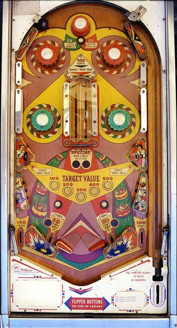

The top passive bumpers scores 10 points, or 100 when lit, and alternates being lit or not each time one of the red pop bumpers is hit. Red pop bumpers always score 1 points. Green pop bumpers lower down score 1 point or 10 when lit, and are lit for the remainder of the ball by pressing the On Bumpers/On Kickers button between the red pop bumpers.
The center of the table has 5 captive balls in a large U-turn mechanism. A strong hit to one side of the U will send a captive ball from one side to the other. Doing so scores 100 points and advances the Target Value. One side of the U-turn is lit for a Special. Moving all 5 balls to the lit side scores 1 free game and moves the Special to the other side of the U-turn. The status of the captive balls and position of the Special carries over across players, balls, and games. The Target Value starts each ball at 100 points, increases by 100 each time a captive ball is moved up to a maximum of 500, is scored at the lower left and right standup targets, and resets only when the ball drains.
Behind the flipper hinges are kickers which score 5 points or 50 when lit, then fire the ball at the captive ball structure. Ideally, the kicker is strong enough that if it hits one side of the U-turn squarely, it will be able to move that captive ball. The kickers are lit at the same time as the bumpers. Conventional slingshots are located slightly further up the table than is typical, directly above the out lanes. Out lanes score 100 points. There is no center post, kickback, or free ball gate. There is also no end of ball bonus or extra ball feature. Tilt ends game, but only for the player who tilted.
The below picture of Whoopee's playfield was taken from the Internet Pinball Database, where it was originally provided by Alan Tate. In this picture, the five captive balls in the center structure are missing.
